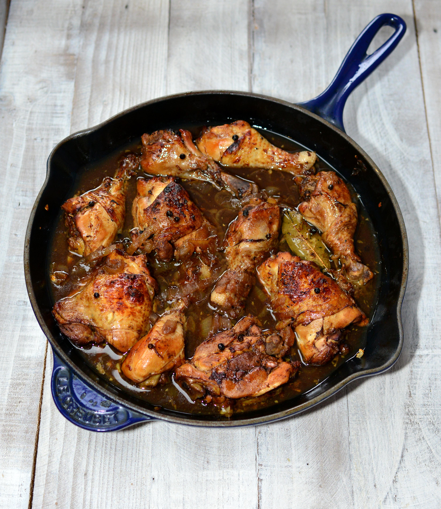

Chicken Adobo

Description:
This classic adobo recipe is simple to make and famous with all who have tasted it. It has been modified to be a bit more saucy than traditional adobo, it is delicious served over rice.
Ingredients:
- 2 tablespoons vegetable oil
- 1 (3 pound) chicken, cut into pieces
- 1 large onion, quartered and sliced
- 2 tablespoons minced garlic
- ⅓ cup white vinegar
- ⅔ cup low sodium soy sauce
- 1 tablespoon garlic powder
- 2 teaspoons black pepper
- 1 bay leaf
Steps:
-
Heat the vegetable oil in a large skillet over medium-high heat. Cook chicken pieces until golden brown on both sides, then remove. Stir in the onion and garlic; cook until they soften and brown, about 6 minutes.
-
Pour in vinegar and soy sauce, and season with garlic powder, black pepper, and bay leaf. Add the browned chicken, increase the heat to high, and bring to a boil. Reduce heat to medium-low, cover, and simmer until the chicken is tender and cooked through, 35 to 40 minutes.
Back to top
Homepage